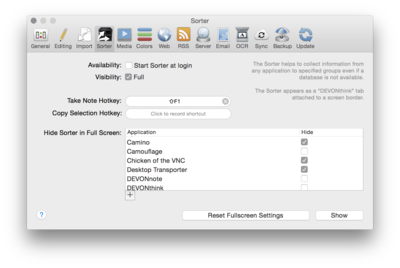

|
|
Sorter |
|
 The Sorter preference allows you to assign a hotkey for capturing a selection into the inbox of the Sorter, as well as a hotkey for taking a new note, showing the Sorter at login, and starting or quitting the Sorter manually. Read more... Availability, Hotkeys Check Start Sorter at login to start the Sorter immediately after you log in. Check Visibility: Full to make the Sorter tab fully visible, or uncheck it to make the tab fade when the mouse pointer is moved off it. To change the hotkeys for taking a new note or copying a selection, click the Click to record shortcut button, then press the hotkey that you want to use. Press the ⎋ key to cancel recording a new shortcut. When the Sorter is not running, this hot key opens the Take Note panel. Hider Sorter in Full Screen This lists shows all full screen applications that Sorter is tracking. Add other applications using the + button, and check or uncheck applications to hide Sorter when the application is going to full screen mode. Reset the full screen settings to make DEVONthink Pro Office "forget" all remembered applications. Click Start or Quit to start or quit the Sorter manually. |